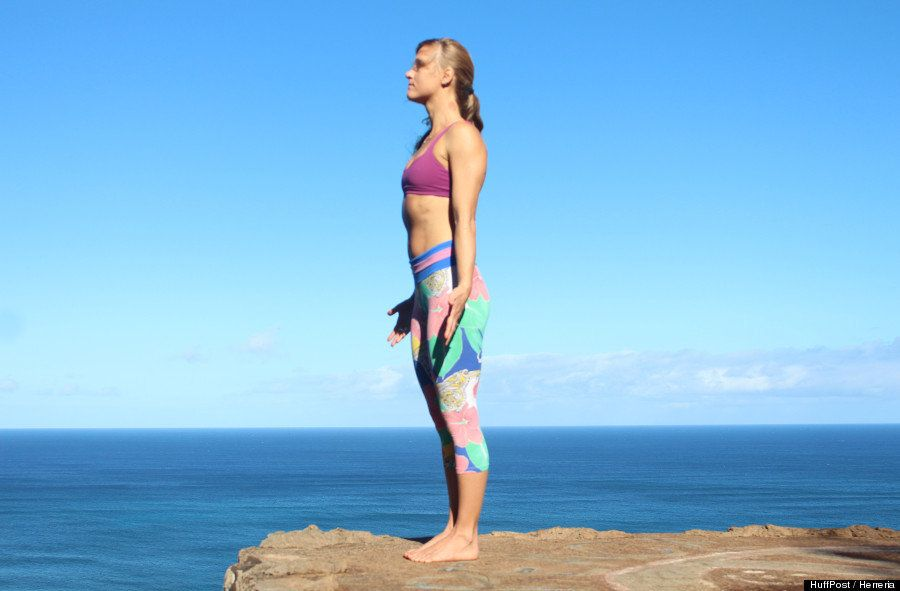

Postura de la montaña (Tadasana)
De pie, mantén la columna firme con los pies en paralelo y los pulgares de los pies en contacto. Mira al frente.
Errores comunes: Las costillas y las nalgas no deben sobresalir demasiado. Trate de mantener la columna vertebral en una línea recta.
Sochocki dice:"A diferencia de cuando estás de pie habitualmente, ahora te yergues con un propósito, siente las cuatro esquinas de tus pies, eleva las rótulas, distribuye el peso entre las piernas y gíralas hacia adentro, lleva el coxis hacia atrás y alza el ombligo hacia arriba y hacia adentro. Relaja los hombros en dirección a la parte baja de la espalda y gira las palmas de las manos hacia el frente. Imagina que cargas con piedras pesadas en las manos, mira al frente y ¡siente el poder de la Montaña!"